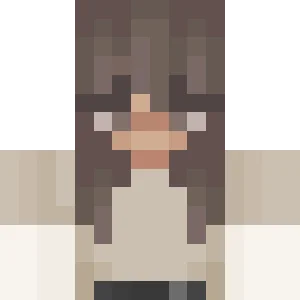

Castgeoduck
Castgeoduck joined the SMP in Season I, building a small base on an island next to the shopping district. The base features a house with many dogs, a tree with a house in it's stem and the only station(appart from the mainstation) of the failed underwater ice-boat tunnel project.In Season II she built another cozy little base next to the village of Craemon.
She has not made a return to Minelife in Season III...
Castgeoduck
Links
-Information
MemberJoined: Season I
From: Germany